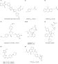
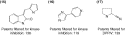

Cited By
Cited By")


Copyright © 2006 Elsevier Ltd All rights reserved.
In silico techniques
Hit and lead identification: Integrated technology-based approaches
Robert A. Goodnow, Jra, 
Available online 19 January 2007.
For many targets in drug discovery, the identification of a small molecule ‘hit’ as a starting point for the hit-to-lead process is a critical early step. Over the years different technology-based strategies have evolved in an attempt to enhance the rate and efficiency of this important phase of the drug discovery process known as hit identification. In adapting the appropriate strategy or strategies to each hit and, subsequently, lead identification problem, it is important to consider the different types of available approaches, as well as take into account what may have been successful for a similar target in the past. In short, not all hit identification problems are the same and thus, should not be approached as if they were.
Section editors:
Tudor Oprea – University of New Mexico School of Medicine, Albuquerque, USA
Alex Tropsha – University of North Carolina, Chapel Hill, USA
Article Outline
- Introduction
- Multiple technology-based approaches for identifying hits and leads
- Strategy 1: high-throughput biochemical and cellular assays
- Alternative HTS formats: MS, NMR and HCS
- Focused HTS
- HTS of DOS libraries
- Strategy 2: assay of natural products
- Strategy 3: structure-based design
- Strategy 4: peptides and peptidomimetics
- Strategy 5: fragment screening and assembly
- Strategy 6: chemogenomics and virtual HTS
- Strategy 7: literature- and patent-based innovations
- Hit-to-lead efforts deliver the lead
- Conclusion
- Related articles
- Acknowledgements
- Glossary
- References
Introduction
Given the billions of dollars that are invested in drug discovery research every year by numerous companies, it is not surprising that the productivity of the drug discovery process should come under analysis and scrutiny. The drug discovery process as it is often practiced is organized into different phases, starting from the proposal of a biological target – therapeutic treatment concept running up to product launch. (Fig. 1) Each transition from one phase to the next is a critical milestone that may affect the overall potential for success. This is no less true for the selection of a good chemical lead for optimization to the point of clinical candidate selection. Leads often result from a preliminary optimization of initially identified hits in a process known as the hit-to-lead process. Hits can be identified by one or more of several technology-based approaches. To develop efficient drug discovery practices, it is useful to consider the various strategies that have been reported for hit and lead identification (HI and LI, respectively).
| Full-size image (53K) |
Figure 1. Hit and lead identification (HI and LI, respectively) are two critical components in the drug discovery process necessary for efficient lead optimization (LO). Enhancing the rates of success at any transition milestone transition point (such as LI and LO) is a means to enhance the overall drug discovery process.
Multiple technology-based approaches for identifying hits and leads
For the purposes of this discussion, it is useful to consider separately various technology-based approaches for identifying hits in drug discovery. These approaches have also been separated to some extent based on the source or type of compounds that one is starting with to discover a lead. For example, although hits coming from combinatorial libraries and natural products may both be detected by high-throughput screening (HTS) methods, they are often treated as separate approaches for lead finding because of inherently different advantages and disadvantages related to the source of compounds. In any case, it goes without saying that the application of these approaches is often combined. That is to say, scientists integrate information from multiple types of technology-based strategies to arrive at the best understanding of which compounds to start with as hits to derive leads for further optimization in drug discovery. Ideally, these approaches are iterative and readily applied as a means to guide design and problem solving throughout the evolution of a project in the discovery process. In this article, examples have been selected which highlight the particular technology approach in question; the examples in no way exhaustively represent the diverse array of interesting results for hit and lead generation.
Strategy 1: high-throughput biochemical and cellular assays
A common strategy practiced almost by default in many organizations for the identification of hits is through HTS of large collections of small molecules. Many organizations create and maintain such collections of compounds for screening purposes [1 and 2]. The development of automation technologies for handling compounds and for performing biochemical screens makes the assay of greater than one million compounds a common event in drug discovery. Many high-throughput screening assays streamline the measurement of calcium or cAMP or else use fluorescent read-outs to report on the interaction of binding partners; radioligands are also important assay formats, but safety and disposal costs limit the continuing broad application of this method when non-radioactive methods exist.
Alternative HTS formats: MS, NMR and HCS
HTS by application of other technologies has recently been reported. For example, HTS of large collections has also been demonstrated with the use of size-exclusion columns coupled with mass spectrometers to detect those compounds contained within mixtures of 10 structures, which bind to a target protein [3]. Hits detected in this way were further investigated by NMR to provide verification of binding and to identify which part of the protein is perturbed by such binding. In the report of this method, a library of 32,000 compounds was screened against RGS4 (a regulator of G-protein signaling). The top most potent 50 primary hits were analyzed by NMR for confirmation. One compound was confirmed as to bind to RGS4 at a unique binding site that suggested a potential mechanism for inhibition. HTS methods that use other detection technologies such as surface plasmon resonance [4], which detects binding of compounds to surface bound protein targets, have also been reported. Despite progress of these other methods, the throughput of traditional biochemical assays in an HTS mode has been difficult to surpass.
Recent developments in high-throughput imaging and image processing technology have made possible high-content screening (HCS) [5]. With this method, it is possible to monitor changes of sub-cellular functions due to the presence of an exogenous molecule. For example, a recent report describes the identification of compounds with sub-micromolar potency in preventing the abnormal accumulation of cholesterol in cellular lysosomal storage (Compound 1, Fig. 2) [6]. It may have been difficult to develop a biochemical assay, which provided the necessary output, which correlates with the phenomenon of lysosomal storage.
|  | Full-size image (64K) |
Figure 2. Noted above are examples of hits detected by HCS screening (1), by MS- and NMR-based methods (2 and 3), or by HTS of DOS libraries (4). Important medicinal structures have resulted from natural product sources, such as in the cases of structures (5–7). Other lead structures have been derived through biostructurally guided designs, such as for structures (8 and 9).
Focused HTS
Another strategy for hit identification using HTS methods is the screening of focused sets of compounds. Such subsets of compounds can be focused either by simply creating subsets [7] within corporate collections according to certain chemoinformatic criteria or by the design and synthesis of target-biased libraries [8]. One advantage of these approaches is the integration of drug discovery knowledge and expectations about the structures necessary for a particular target (so-called protein family targeted libraries). Another advantage is the savings and time of assaying fewer molecules. The synthesis of targeted, focused libraries, which is usually a technology intensive process [9], enhances the density of coverage around a particular chemistry space, which is often sparsely populated in a random collection of compounds. The success of deriving leads from libraries has been covered in detailed reviews [10]. Another advantage of running assays on focused sub-sets is the possibility to run smaller screens more conveniently and iteratively as more compounds become available. For example, scientists at Biovitrum (http://www.biovitrum.com) have reported a focused screen in a total of 531 compounds in cocktails of 5–10 compounds each against adipocyte fatty acid binding protein (FABP4) using an NMR method in which the tumbling rate of small molecules was examined for reduction resulting from binding to the larger FABP4 protein. Hit optimization was also guided by the NMR method [11]. Compound 2 as a primary hit was further optimized to compound 3 with a few analogs based on the NMR information (Fig. 2). The use of NMR spectroscopy to guide the selection of fragments to add to the preliminary hit is common to methods applied for lead generation by structure-based methods and fragment screening (vide infra).
HTS of DOS libraries
Finally, a part of the strategy of lead identification by HTS methods is the screening of sets of diverse compounds created by diversity-oriented synthesis (dos, see Glossary) [12]. DOS is the creation of large and diverse compound libraries that result from complex, multi-step or multi-component chemistry. Molecules created in this way are sometimes characterized by the presence of one or more stereo-centers as a means to enhance the overall presentation of chemical diversity. The result is often a combinatorial array of structures that are not necessarily target biased, but are unique, potentially useful starting points for lead optimization [13]. Schreiber et al. [14] published an example of DOS libraries wherein they describe the use of solid phase combinatorial synthesis of structurally diverse molecules found to be useful for modulating the protein Ure2p, a repressor of several transcription factors. One such molecule (compound 4) provides a tool useful for the dissection of Ure2p's signaling role. With this compound, it was possible to define a mechanistic relation between repressor Ure2p, transcription factor Nil1p and glucose levels. A molecule from a similar library chemistry provided another example of the application of a hit from a DOS library, this time having activity as a histone deacetylase inhibitor [15].
Strategy 2: assay of natural products
Natural products have been the starting points for many drugs [16]. Although leads discovered from natural product sources may fall under an HTS approach, the fact that such test compounds are often available only in smaller quantities and/or as mixtures may preclude their direct inclusion in standardized corporate collections of synthesized small molecules. Due to the molecular complexity of many natural products, there are sometimes concerns to start a hit-to-lead effort with natural products. However, perhaps due to a lack of desired success in lead finding although screening only historical pharma collections, there has been resurgence in interest in natural products as a source for leads [17]. A useful review on this approach has been published [18]. One of the most striking examples of natural products drug discovery is the evolution of HMG CoA reductase inhibitors beginning from the isolation of Compactin [19] (compound 5) and Mevinolin [20] (compound 6) from fermentation broths to the eventual creation of Atorvastatin (compound 9) (Fig. 2).
Strategy 3: structure-based design
There are several excellent reviews describing lead generation campaigns in which structural information of the active site with a bound substrate ligand was used to create novel hits and leads [21 and 22]. Once a low-throughput process, the generation of biostructures has been accelerated by the application of technology methods to protein production and crystallization. This strategy has been reported for leads developed as renin and HIV protease inhibitors, and matrix metalloprotease inhibitors. The design of novel kinase inhibitors based on the analysis of small molecule-protein co-crystal structures has been frequently reported. An interesting example of the creation of a selective CDK4 inhibitor (compound 10) was reported by scientists at Cyclacel (http://www.cyclacel.com) (Fig. 1) [23]. In the absence of a CDK4 structure, a model structure was created based on CDK2 and CDK6. The interactions of CDK4-selective compounds were inferred from modeling investigations. This study resulted in the incorporation of a positively charged group, which conferred CDK4 selectivity to otherwise non-selective compounds.
Another recent example of structure based drug design was reported for the inhibition of an inhibitor of protein phosphatase 1B (PTP1B), a potentially important target in many therapies [24]. Although several PTP1B inhibitors have been reported, almost all contain negatively charged moieties such as phosphonates or carboxylates, which serve as mimics of the tyrosine phosphate found in the substrate of the endogenous enzyme-catalyzed reaction. Such negatively charged moieties hinder efficient cellular permeability of these inhibitors. Scientists at Incyte (http://www.incyte.com) examined the structures of small molecules bound to PTP1B as determined by X-ray crystallography. By combining features of several images, they were able to define a new phosphate mimic, an isothiazolidinone which was incorporated into a PTP1B peptide substrate (9).
Strategy 4: peptides and peptidomimetics
Peptides, whether synthetic or derived as fragments of the endogenous ligands have served as a basis for peptide-mimetic research for many years [25]. The study of peptide SAR is often the first step in defining a critical, minimum sequence SAR for modulation of a particular target. The convenient and rapid synthesis of peptide analogs facilitates the identification of peptides having attractive biological properties. However, there are concerns about the availability and stability of these starting points once administered in vivo for drug discovery research. As a means to address these problems, significant efforts have been made to transform peptides into small molecules, with mixed success. However, the recent launch of Enfuvirtide (Fuzeon®) highlights the possibility to discover, produce, and formulate a large peptide for therapeutic purposes (Box 1). Enfuvirtide (compound 10) is a linear peptide of 36 amino acid residues having a molecular weight of 4492 Da [26]. More than 100 steps are necessary to produce this molecule.
Box 1. Noted below are examples of peptides and peptidomimetics that illustrate the potential of applying these types of chemical structures in drug discovery research.
(10) Enfuvirtide:
l-Phenylalaninamide, N-acetyl-l-tyrosyl-l-threonyl-l-seryl-l-leucyl-l-isoleucyl-l-histidyl-l-seryl-l-leucyl-l-isoleucyl-l-α-glutamyl-l-α-glutamyl-l-seryl-l-glutaminyl-l-asparaginyl-l-glutaminyl-l-glutaminyl-l-α-glutamyl-l-lysyl-l-asparaginyl-l-α-glutamyl-l-glutaminyl-l-α-glutamyl-l-leucyl-l-leucyl-l-α-glutamyl-l-leucyl-l-α-aspartyl-l-lysyl-l-tryptophyl-l-alanyl-l-seryl-l-leucyl-l-tryptophyl-l-asparaginyl-l-tryptophyl-(9CI)
(11) α-melanotropin: (frog MCR EC50 = 0.015 nM) [30 and 46]
Ac-Ser-Tyr-Ser-Met-Glu-His–Phe-Arg-Trp-Gly-Lys-Pro-Val-NH2
(12) Minimally active sequence: (frog MCR EC50 = 0.2 nM)
Ac-His-d-Phe-Arg-Trp-NH2
(13) Cyclic MC-4 peptide:
Ac-Ile-c[Asp-His-d-Phe-Arg-Trp-Lys]-NH2
(14)
An interesting example of the evolution of the concept of lead finding through the synthesis of peptides relates to the melanocortin receptors, which mediate several physiological functions and may have therapeutic utility with respect to obesity and sexual dysfunction. An early and significant advance in lead finding for these targets was the discovery and pharmacological characterization of α-MSH (compound 11) as a potent agonist, the endogenous ligand for these receptors (Box 1). Scientists at the University of Arizona (http://www.arizona.edu) identified the minimal, active sequence as Ac-His-D-Phe-Arg-Trp-NH2 (compound 12), thereby substantially reducing the molecular weight and complexity of this GPCR agonist [27]. Many SAR iterations were performed to optimize the potency, selectivity and properties of these peptides towards the various receptor subtypes [28]. Cyclic peptides of this type are under clinical evaluation for the treatment of male dysfunction [29]. These examples do much to counter the ‘only standard small molecules as drug’ concept.
Perhaps due to concerns that MC-4 peptides would not have properties consistent with drugs, many research efforts were also applied to identify small molecule mimics, derived from privileged peptide structures and entirely non-peptide structures. Structure (compound 14) is presented as an example of a potent, peptidomimetic agonist of the MC-4 receptor [30].
Strategy 5: fragment screening and assembly
There are recent reports of starting the HI process by assaying small fragments at higher concentrations to find molecules, which are expected to have only modest levels of binding potency (e.g. 100 μM) [31]. With such weakly binding fragments, high affinity interactions are then created by concatenating these multiple fragments that are found to bind to adjoining sites [32]. To maintain the drug-like properties of molecules composed of concatenated fragments, it is necessary to start with a collection of molecular fragments, which are modest in size (100–250 Da). It has been proposed that a diversity of <10,000 fragments will represent most possible binding modes. As a result it would seem that one need to assay a lower number of compounds to cover sufficiently a reasonably sized chemical space. Another premise of this approach is that active fragments have a higher proportion of atoms involved in the binding event and therefore, bind with greater efficiency (fewer unnecessary atoms present). Finally, an important assumption for elaborating these weak binding points is the understanding of their binding interactions with the biological target. In creating a fragment screening library, many have included so-called privileged structures [33]. These are fragments that are thought to confer affinity for a particular target. Although an appealing concept, this concept of privileged structures concept has recently come under some criticism [34].
Strategy 6: chemogenomics and virtual HTS
In silico methods for HI are appealing for the possibility to enhance the rate of discovery of active compounds while decreasing the need for the lengthy synthesis and assay of numerous candidate structures. It is commonly accepted that similar structures are likely to have similar biological and pharmacological activities [35]. In the chemogenomics approach, the intent is to integrate the similarity of target sequences with the similarity of molecules and their biological activities. The hope is to create a predictive tool for identifying and designing novel compounds that are active for a newly discovered target. Virtual screening usually involves a process for ranking virtual compounds according to scoring criteria. An excellent review of this practice as applied to docking structures into a protein structure derived from crystallography is available [36]. An interesting publication which illustrates the concept that compounds may have a potential for activity within the same protein family (e.g. the kinase family) leading to the discovery of new hits and potential leads have been reported by scientists at Ambit (http://www.ambitbio.com) [37].
Strategy 7: literature- and patent-based innovations
The easy availability of patents and scientific literature comprises a source of tested ideas for new lead identification. Organizations are not likely to report full details about how their leads were developed using information available from the public domain. However, simply noting the similarities of many drugs for the same or similar targets hints at this practice. Further, examining the similarity of some compound structures disclosed in patents across the same protein family target (e.g. kinases) is also telling of this likely practice (Fig. 3). In this convenient and qualitative analysis, it is important to note that patent applications, which cover composition of matter rather than method of use are not distinguished; thus some of the patents may describe the same molecule. Basing a lead identification strategy on information available from patents and scientific literature adds the may enhance the likelihood of creating a potent and drug-like lead. At the same time, the challenge this approach is the need to create in a rapid manner a useful chemistry space, which can be protected by a patent. It should be assumed that competitors are likely to take a similar approach simultaneously.
|  | Full-size image (12K) |
Figure 3. Three substructures were searched in SciFinder and the resultant references were selected filtered for patents and then for kinase inhibition (15 and 16) or for DIP-IV inhibition (17), respectively. The number of references identified in this manner provides some sense of the degree to which information in the public domain may serve as a basis of hit and lead identification for some targets.
Hit-to-lead efforts deliver the lead
The technology-based strategies described above, in general, highlight the identification of hits, that is compounds that are initially identified as ‘actives’ for a particular target. The identification of a good lead is often another matter. Except in the case of screens that identify almost no hits, the number of primary hits is often determined by an activity threshold, (e.g. the most potent 0.3% of compounds). Thus, it is important to consider that the active structures that one can identify from an HTS campaign are dependent on the compounds that were assembled to create that collection and the definition of the threshold of ‘active’. Faced with many primary hits for some screens, some organizations have evolved defined hit-to-lead processes to guide and organize LI. The properties that define the focus on and synthesis of compounds for hit-to-lead efforts are also applicable to some extent to the selection of compounds to build better, more drug-like compound collections [38]. Leads result often from a process now commonly known as the hit-to-lead process. Many excellent reviews have appeared which discuss systematization of the process that follows the initial identification of a set of active compounds and leads to the commencement of full LO efforts [39]; other publications have provided clear exemplification in the form of specific examples [40 and 41].
As the strategies for lead generation have become more successful in delivering increasing numbers of hits, it is now necessary to define a rational and scalable workflow for the prioritization of compounds that show some signs of the desired potency. This is particularly true of many HTS campaigns from which there may result a large number of structures. Further, there is a growing perception that simply working with the most active compound may not be enough to justify the efforts to advance a compound for LO. In other words, good potency is just not enough. Rather, a potent primary hit represents a potential starting point to develop an understanding of a series of compounds that have a balance of properties appropriate for a particular therapeutic target. Although a highly potent compound in a primary assay is difficult to ignore, there are many cases where such compounds fail in LO due to issues that might have been detected earlier and before the expenditure of much effort.
An important aspect of the hit-to-lead process is the confirmation of hits. To this end, several technology-based methods have been reported for tackling this problem (Table 1). For example, useful for sorting through many hits, recent reports of by scientists at Northwestern University (http://www.northwestern.edu) have described a dynamic light scattering method to identify compounds which are detected as inhibitors in many unrelated biochemical assays due to self-aggregation, but not by inhibition of the target protein as a single molecule [42]. The detection of such ‘false positives’ is an important part of the hit-to-lead process because efforts to optimize such molecules are usual futile. NMR spectroscopy has also been used in the confirmation of positive hits binding to the target protein [43].
Stages and general criteria for the hit-to-lead process
| Assessing hits | Validating hits | Identification of high quality hits | ‘A good lead’ |
|---|---|---|---|
| Structure and purity confirmed | Activity confirmed with powder sample | Resolution and assay of chiral isomers | Understanding mode of action |
| Not a frequent hitter | Prioritizing feasible chemistry for analog synthesis | Synthesis amenable to HTC | Structure of lead-target complex |
| Minimum toxicity alerts | Potency often <10 μM | Plausible SAR in 50–100 analogs | Potency often <1 μM |
| Minimum Lipinski rules violations | Appropriate target selectivity | No Lipinski rules violation | Encouraging preliminary PK |
| Solubility, permeability, log P calculated | Solubility, permeability, log D measured | Relative stability in microsomal and hepatocyte assays | Low hERG channel binding liability |
| Intellectual property issues assessed | log D: 0–3 | Aqueous solubility >100 μg/mL | |
| Acquiring similar commercial or historical analogs | Permeability (Caco-2, MDCK, PAMPA): high | Low Cyp450, PGP liabilities | |
| Selectivity in enzyme and receptor panel assays |
Conclusion
Of course, it must be repeated that the division of lead identification strategies is artificial to some extent but necessary for this analysis. In reality, the lead identification process for each target is and ought to be a custom mixture of technology-based strategies, worked out according to the particular nature of the target. It is worth noting recent efforts which highlight the coupling of lead identification strategies, such as virtual and HTS which have been successfully integrated, leading to the discovery of novel classes of hits for two GPCR targets, N-formyl peptide receptor [44] and GPR30 [45]. It is useful to note that not all targets are equally amenable to the identification of a set of initial hits and subsequent leads. For some targets, identifying a set of hits is easier relative to others. For those targets for which lead finding may be difficult, discovery teams should adapt multiple strategies in which the latest technologies provide the critical data for high quality lead identification. It has been said that the value of a good lead cannot be overstated. For many targets, such good leads result only from an initial modest hit detected through some technology-based method followed by a rigorous hit-to-lead process. The iterative application and integration of these methods provides the necessary options to undertake this challenging, critical phase in drug discovery. See Table 2 for a comparison summary.
Comparison summary table
| HTS of random collections | HTS of focused sets or targeted libraries | Natural products | Peptides/peptidomimetics | Fragment screening and assembly | Structure-based design | Chemogenomics / virtual HTS | Information-based approaches | |
|---|---|---|---|---|---|---|---|---|
| Technology type | High throughput biochemical and cellular assays | Physical chemical binding assays (surface plasmon resonance, X-ray, NMR) | X-ray, NMR | Computation | Datamining | |||
| Selected, specific company technology | Molecular Devices (http://www.moleculardevices.com), Evotec Technologies (http://www.evotec-technologies.com), Cellomics (http://www.cellomics.com), Promega (http://www.promega.com), Invitrogen (http://www.invitrogen.com), Luminex (http://www.luminexcorp.com), Discoverex (http://www.discoverex.com) | Biacore (http://www.biacore.com), Corning-Epic (http://www.corning.com/lifesciences) MDS Sciex (http://www.mdssciex.com) | Bruker (http://www.bruker.com), Varian (http://www.varian.com), Rigaku (http://www.rigaku.com), Jasco (http://www.jascoinc.com), GE (http://www.gehealthcare.com), Riken (http://www.riken.go.jp) | CCG (http://www.chemcomp.com), Accelrys (http://www.accelrys.com), Tripos (http://www.tripos.com), OpenEye (http://www.eyesopen.com), Schrödinger (http://www.schrodinger.com), Jubilant Biosys (http://www.jubilantbiosys.com) GCK (http://www.gvkbio.com/informatics/index.htm) | SciFinder (http://www.cas.org/scifinder) Derwent (http://scientific.thomson.com/products/dwpi/) Elsevier MDL (http://www.mdl.com) Micropatent (http://www.micropat.com) | |||
| Pros | Cheap, readily available collections; samples derived from med. chem. research; many widely diverse structures | Faster and cheaper to screen than full collection; accomodates lower throughput assays | Diverse, soluble, unique structures; proven source of drugs | Ease of synthesis of diverse collections; close mimic of endogenous ligands | Starting with smaller pieces; greater ligand efficiancy | Rational bias for testing, designing new structures | Rate and ease of examining multiple ideas | Starting with a valid target/molecule concept; drug-like starting point; possibly closer to a drug |
| Cons | Many insoluble, non-drug-like molecules; capital infrastructure and reagent costs; substantial time and cost to develop a high quality and diverse compound collection | Diversity is limited to initial selection; druglikeness of combinatorial library compounds | Synthetic complexity, small quantities, deconvolution of mixtures; cost per sample | Metabolic stability; oral bioavailability; atypical drug-likeness; cost of goods | Low potency hits may require significant increase in potency | Quantity of protein supply; not all targets amenable to generate a structure | Limited validation of scoring metrics; designing unsynthesizable compounds | Limitations of intellectual property; not good for new targets |
Related articles
- Bleicher, K.H. et al. (2003) A guide to drug discovery: Hit and lead generation: beyond high-throughput screening. Nat. Rev. Drug Discov. 2, 369–378
Congreve, M. et al. (2005) Structural biology and drug discovery. Drug Discov. Today 10, 895–907
Williams, S.P. (2005) Recent applications of protein crystallography and structure-guided drug design. Curr. Opin. Chem. Biol. 9, 371–380
Hardy, L.W. and Malikayil, A. (2003) The impact of structure-guided drug design on clinical agents. Curr. Drug Discov. Dec., 15–20
Schneider, G. and Schneider, P. (2004) Navigation in chemical space: ligand-based design of focused compound libraries. Methods Principl. Med. Chem. 22, 341–376
Acknowledgements
Paul Gillespie, Ann Hoffman and David Fry are acknowledged for helpful discussion and critical reading of this manuscript.
References
Glossary
- DOS
- diversity oriented synthesis, a strategy for creating chemical diversity based on multi-step combinatorial chemistry.
- HCS
- High content screening is the application of imaging and image information processing technology applied typically in an automated fashion and in a highly parallel manner to problems in cellular biological research and drug discovery.
")